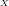
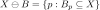
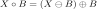
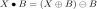

Method
For a binary image

and structuring element (e.g. a
(e.g. a  square or a disk):
square or a disk):
- erosion

— grey-level version: minimum filter; - dilation — maximum filter;
- opening

: removes small bright objects, keeps the shape of large ones; - closing

: fills small dark holes and gaps.
Opening and closing are idempotent; morphological profiles (openings and closings with growing ) describe the size of structures around each pixel and are strong spatial features for classifying very high resolution images.
Example
from scipy import ndimage
water = nir < T # noisy threshold mask
# drop isolated pixels
clean = ndimage.binary_opening(water, structure=np.ones((3, 3)))
# fill gaps in the river
clean = ndimage.binary_closing(clean, structure=np.ones((5, 5)))Intuition
Roll a coin of the size of inside the objects (opening) or outside them (closing): whatever the coin cannot reach is erased or filled.
Pitfall
The structuring element encodes a scale and a shape: a square removes a one-pixel-wide river together with the noise. Choose smaller than the narrowest structure to keep.